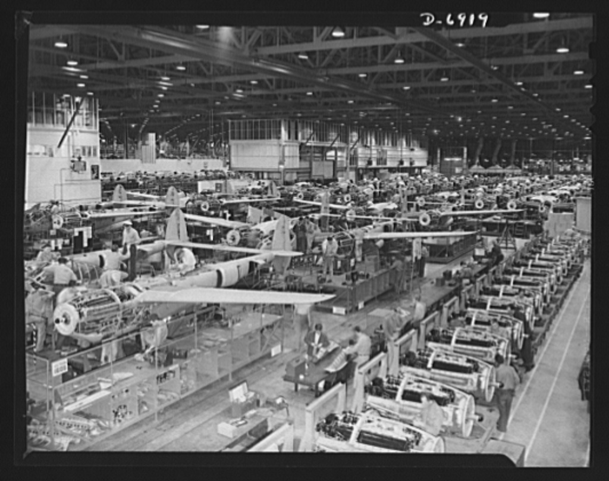

Kemunculan revolusi industri 2.0 terjadi di awal abad ke-20 yang dikenal dengan revolusi teknologi. Revolusi industri yang terjadi ini ditandai dengan adanya penemuan tenaga listrik yang membuat mesin uap yang tadinya sering digunakan dalam proses produksi semakin lama digantikan dengan adanya tenaga listrik tersebut.
Namun, terdapat kendala yang dapat menghambat proses produksi yang terjadi di sebuah pabrik yaitu permasalahan transportasi. Di akhir tahun 80an, transportasi mobil mulai diproduksi secara massal. Namun, proses tersebut tidak membuat pembuatan transportasi mobil lebih singkat dikarenakan setiap kendaraan yang ada harus dirakit dari awal hingga akhir oleh seorang perakit mobil.
Hal ini memiliki arti, jika proses produksi transportasi tersebut ingin cepat selesai membutuhkan tenaga banyak orang untuk merakit mobil di waktu yang bersamaan. Namun, dengan adanya lini produksi atau yang dikenal dengan assembly line pada tahun 1913 yang menggunakan ban berjalan atau conveyor belt memudahkan proses produksi yang terjadi sehingga terciptanya sebuah revolusi.
Revolusi tersebut menyebabkan proses produksi yang ada menjadi berubah secara keseluruhan. Dengan adanya hal tersebut, proses produksi mobil tidak lagi memerlukan banyak tenaga kerja untuk merakit dari awal hingga akhir, namun karena adanya bantuan kemajuan teknologi tersebut, sebuah proses produksi transportasi mobil hanya membutuhkan perakit mobil untuk menjadi spesialis yang masing-masing mengurus satu bagian saja.
Penemuan pembangkit tenaga listrik serta motor pembakaran dalam combustion chamber ini sendiri yang menandakan terjadinya revolusi industri 2.0. Penemuan tersebut yang memicu berbagai kemunculan teknologi baru, seperti mobil, pesawat terbang, pesawat telepon, dan masih banyak lagi yang mempengaruhi kemajuan seluruh dunia secara signifikan.
Dampak dari revolusi industri 2.0 ini yang lain dapat kita lihat dengan adanya kejadian Perang Dunia II, dimana pada hal tersebut terjadi berbagai kendaraan perang seperti pesawat tempur, tank, hingga senjata lainnya melakukan proses produksi dalam skala yang besar.
Pada era revolusi industri ini juga terjadinya perkembangan pada manajemen bisnis yang membuat semakin besarnya kemungkinan untuk meningkatkan efektifitas serta efisiensi berbagai fasilitas yang ada di industri.

Revolusi tersebut yang membuat terbentuknya berbagai divisi pekerjaan dimana setiap individu ataupun pekerja hanya berfokus pada pekerjaannya di bagian tertentu dari keseluruhan proses produksi yang ada. Sehingga, assembly lines atau proses manufaktur yang ada, dimana setiap divisi memiliki perannya masing-masing dan disusun berdasarkan urutan yang jelas untuk menciptakan sebuah produk dari proses yang berlangsung akan lebih efisien dan cepat.